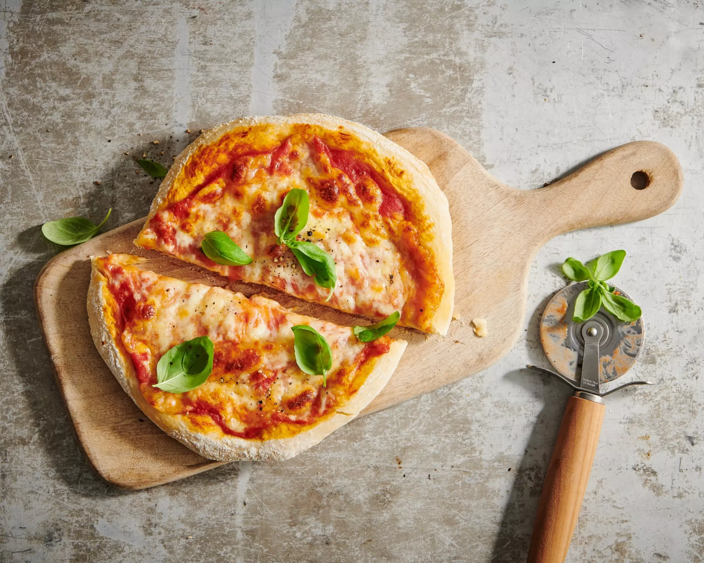

Pizza Margherita
Für eine klassische Pizza Margherita brauchst du Mehl, Wasser, Hefe, Salz und Olivenöl für den Teig. Die Tomatensauce wird mit passierten Tomaten, Salz und Oregano gemacht. Dann kommt Mozzarella drauf, etwas Basilikum, und das Ganze wird im Ofen knusprig gebacken. Der Ofen sollte auf mindestens 220°C vorgeheizt werden. Backzeit ca. 10–15 Minuten je nach Ofen. Du kannst auch etwas Knoblauch oder Chili auf die Pizza geben. Wichtig ist, dass der Teig dünn ausgerollt ist. Geniesse deine Pizza heiss mit einem Glas Rotwein oder Eistee.